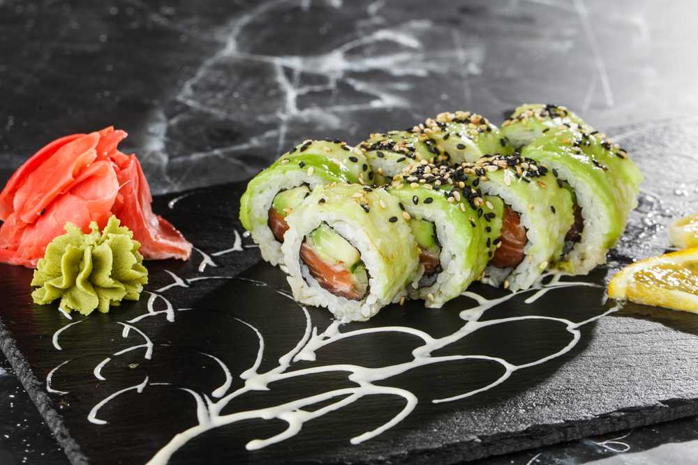

Sushi

Description
Dragon Roll is a popular sushi dish that originated in Japan. It is a type of sushi roll that features a combination of ingredients such as tempura shrimp, avocado, and cucumber, all wrapped in nori seaweed and sticky sushi rice.
Ingredients
- 2 cups sushi rice cooked and seasoned
- 4 nori sheets
- 1 avocado thinly sliced
- 1 cucumber cut into thin strips
- 8 ounces eel unagi, cooked and sliced
Steps
- Place a nori sheet on the sushi mat.
- Spread a thin layer of sushi rice evenly over the nori.
- Lay avocado, cucumber, and eel slices along the center of the rice.
- Roll the sushi tightly using the mat, pressing firmly to seal the roll.
- Use a sharp knife to cut the roll into 8 even pieces.